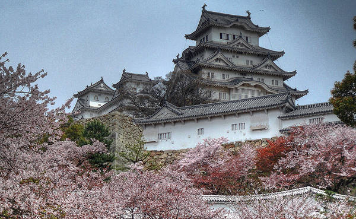
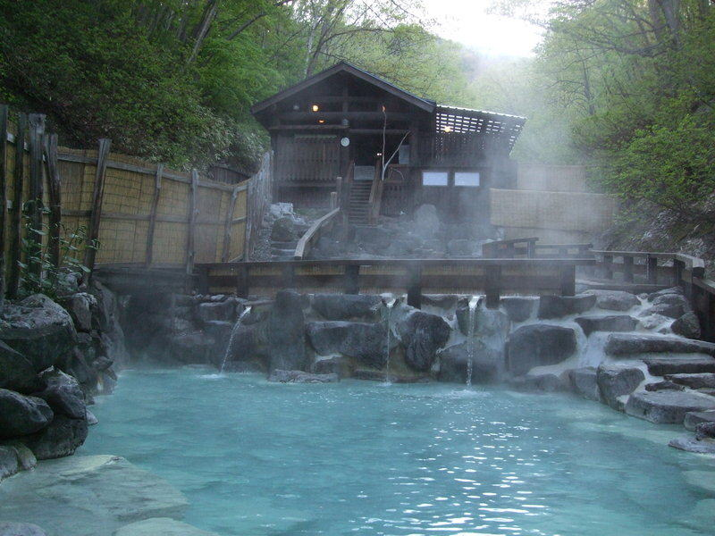

Shinto shrines are places of worship and the dwellings of the kami, the Shinto "gods". Sacred objects of worship that represent the kami are stored in the innermost chamber of the shrine where they cannot be seen by anybody.
People visit shrines in order to pay respect to the kami or to pray for good fortune. Shrines are also visited during special events such as New Year, setsubun, shichigosan and other festivals. New born babies are traditionally brought to a shrine a few weeks after birth, and many couples hold their wedding ceremonies there.
Temples are the places of worship in Japanese Buddhism. Virtually every Japanese municipality has at least one temple, while large cultural centers like Kyoto have several hundred.
Temples store and display sacred Buddhist objects. Some temples used to be monasteries, and some still function as such. Structures typically found at Japanese temples are:
While many of Japan's historic buildings and districts have been lost due to fires, earthquakes, wars and city redevelopment over the centuries, some cities and towns have managed to preserve a street block or whole district of traditional buildings for residents and tourists to enjoy today.
Garden design is an important Japanese art form that has been refined for more than 1000 years. Gardens have evolved into a variety of styles with different purposes, including strolling gardens for the recreation of Edo Period lords and dry stone gardens for the religious use by Zen monks. Great gardens can be found throughout Japan, with particularly many in the former capital of Kyoto.

Natural hot springs (温泉, onsen) are numerous and highly popular across Japan. Every region of the country has its share of hot springs and resort towns, which come with them.
There are many types of hot springs, distinguished by the minerals dissolved in the water. Different minerals provide different health benefits, and all hot springs are supposed to have a relaxing effect on your body and mind. Hot spring baths come in many varieties, indoors and outdoors, gender separated and mixed, developed and undeveloped. Many hot spring baths belong to a ryokan, while others are public bath houses. An overnight stay at a hot spring ryokan is a highly recommended experience to any visitor of Japan.
For more things to do in Japan, click here!